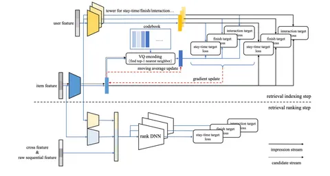

Сегодня разберём статью об обучаемом в реалтайме индексе кандидатов от ByteDance (TikTok).
Retrieval — ключевой этап в рекомендательных системах. Он ASAP отбирает тысячи потенциально релевантных кандидатов в рекомендации из огромного пула документов. Ограничения по времени заставляют системы полагаться на индексы, но традиционные подходы имеют свои недостатки.
Один из самых популярных подходов — HNSW в связке с Two-Tower-моделью. Однако у него хватает минусов:
— Индекс нужно регулярно перестраивать, что занимает много времени.
— При построении индекса не учитывается таргет.
— Two-Tower хуже моделирует user-item взаимодействия.
Авторы статьи предлагают новый подход к построению индекса — streaming vector quantization, который обеспечивает:
— Index Immediacy — быструю адаптацию к действиям пользователей, так как индекс дообучается в реальном времени. Это особенно важно для TikTok.
— Index Reparability — устойчивость к деградации. В отличие от HNSW Two-Tower, steaming VQ не перестраивается, поэтому нужно убедиться, что качество индекса не начнёт деградировать со временем.
— Index Balancing: отсутствие bias в пользу популярного контента.
— Multi-task Learning: при обучении индекса можно одновременно учитывать разные рекомендательные таргеты.
На картинке — схема двух хронологических этапов, из которых состоит streaming VQ:
— Retrieval Indexing. С помощью VQ-VAE из всего корпуса документов отбираются несколько тысяч кандидатов, близких к эмбеддингу пользователя.
— Retrieval Ranking. Более сложная модель с кросс-аттеншном сортирует результаты предыдущего этапа, отправляя лучшие на финальное ранжирование.
По словам авторов, внедрение streaming VQ в TikTok значительно улучшило ключевые продуктовые метрики, полностью заменив другие подходы к генерации кандидатов.
@RecSysChannel
Разбор подготовил
